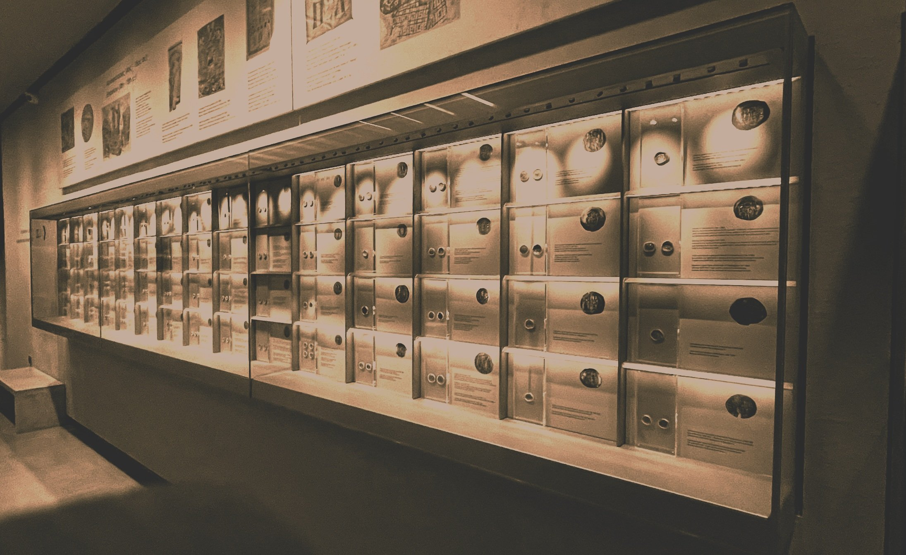

Week 1¶
Introductions.¶

Course Introduction.¶
We will review the course's overarching themes, objectives, and goals on our first day. We will also discuss assignments and student responsibilities.
- No Readings.
Obsidian: What is it?¶
In our first full class of the semester, we will explore Obsidian.md, a program which can be run on Windows, Mac OS, Linux, and more. I will show you how to install it onto your computer (it's free) and provide a tutorial on its basic functionality. The program uses Markdown (md) language for note-taking and stores files locally on your computer with the option to sync through cloud services (We will use Dropbox and other free services. I will not force you to purchase services). Think of Obsidian as your second brain to store your thoughts, ideas, and inspirations. We will use Obsidian to develop notes together and independently and generate weekly discussions amongst our peers. By the end of the term, my goal is for us to have a significant repository of notes compiled that will allow you to think critically and creatively and inform your final project. We will explore the Zettlekasten system (Atomic notes), and what backlinks and outgoing links can do for your note creation. We will also discuss strategic reading and note-taking.
Obsidian is relatively easy to learn, and you do not need to be a coder, programmer or techie to learn or use the software. Trust me, I am from the pre-internet era and quickly learned this. We will start by developing notes together in week two, with you starting discussion posts on your own in week three. In the following weeks, you will create a discussion post in Obsidian that will be deposited into a Class Community Vault. Here, you will read your peers' discussions and link your thoughts to other discussion posts that you believe are important to your thoughts or link to your ideas in some way you think is relevant. For the purpose of this class, students will need to use the provided templates to maintain consistent criteria for note-taking as well as equality in the assessment process. The content within these templates is of your choosing. The goal for the end product is a communal repository that we all can use to inform our final projects. Links to your classmates' notes might inspire or change how you think about a particular idea or a note you created. Since archaeological sites and museums are comprised of individuals working as teams to excavate and create knowledge about the past as well as promote knowledge exploration and dissemination to the public, I want us to explore how we create and disseminate knowledge both independently and as a collective in this course.
Readings:¶
Sönke Ahrens' book, How to Take Smart Notes, is meant for you to skim through for the duration of the course. This is not, strictly speaking, a peer-reviewed academic book, but it is a great source to learn how to create notes or Atomic notes. As Andy Roddick (2022) observes, making notes, not taking notes, forces you to think more critically about the ideas you formulate and record as notes.
Ahrens, Sönke. 2017 How to Take Smart Notes : One Simple Technique to Boost Writing, Learning and Thinking - for Students, Academics and Nonfiction Book Writers. Place of publication is not identified_. Sönke Ahrens.
Discussion:¶
For our first discussion post, I want you to introduce yourself to your peers in Obsidian. In the BioFolder, use the BioTemplate we have learned to use and share as much or as little of yourself with your peers. Some questions designed to help you along the way are centred around your academic interests and goals, not your personal life (but feel free to share if you are comfortable doing so). This exercise is meant to get you comfortable with using Obsidian. Link your Bio to any of your peers. Your bio is due by the next class.
Helpful Resources: Videos and Links¶
I recommend watching Dr. Andy Roddicks's workshop on Obsidian note-taking in academia, linked below. I have also provided other useful links that I have used to learn Obsidian in the resources section. You can start around the 18-minute mark to get into the meat of strategic note-taking or the 32-minute mark if you want to get right into Obsidian.md.
Roddick, Andy. 2022. From Info-Glut to Connected Notes: Obsidian and Digital Note-Taking in Academia DMDS Workshops. Obsidian and Digital-Note Taking in Academia
Below, there are more resources for you. You do not need to watch all the videos. These are here for your reference. If you find a source not on this list that you believe is better or is more up-to-date, please share it with the class in the Community Vault and me by creating a {linkName](www.example.example) in the community folder named Additional Resources.
Obsidian for Beginners: Start HERE — How to Use the Obsidian App for Notes - YouTube
Obsidian setup for 2023 - YouTube
The FUN and EFFICIENT note-taking system I use in my PhD - YouTube
Obsidian Tutorial for Beginner: Version 1 Update - YouTube
My 2020 Comprehensive Obsidian Workflow For Zettelkasten and Evergreen Notes - YouTube
How to get started with Obsidian in 2022 - from scratch! - YouTube